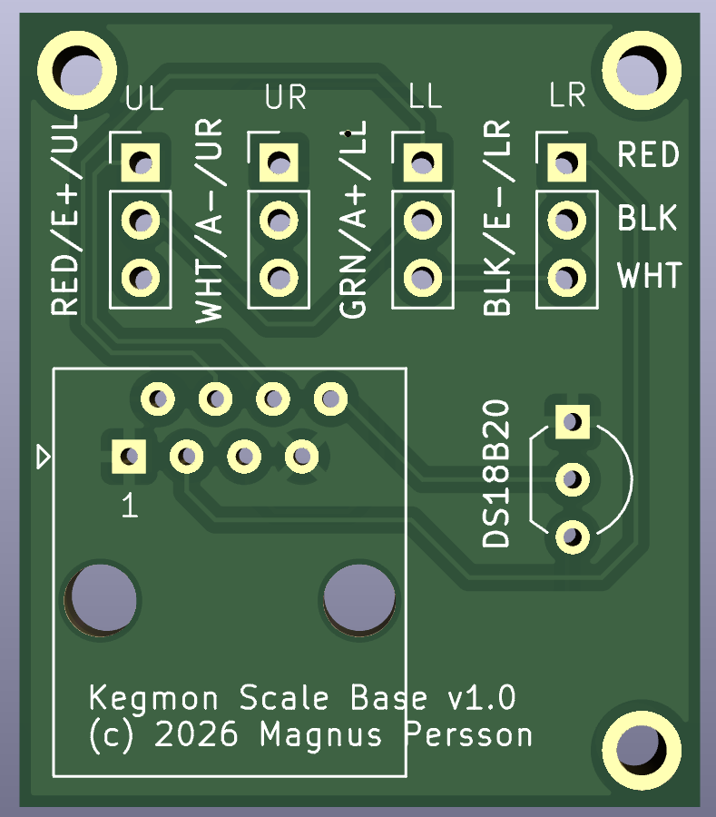
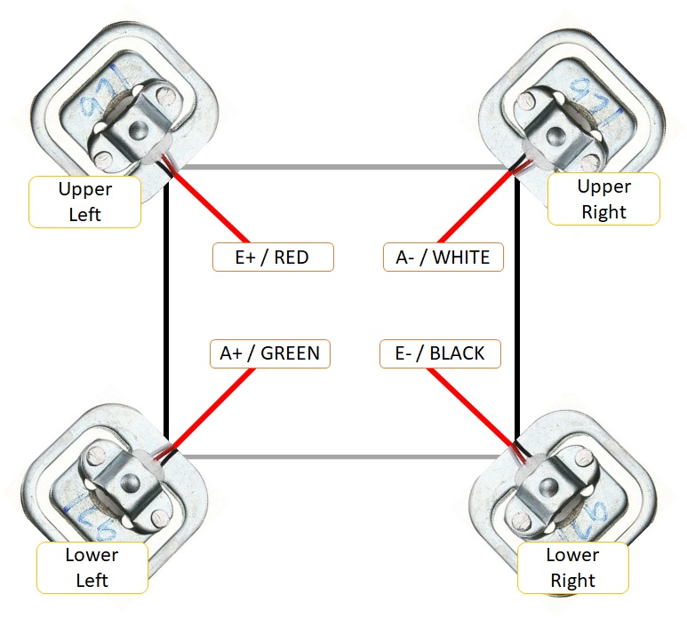
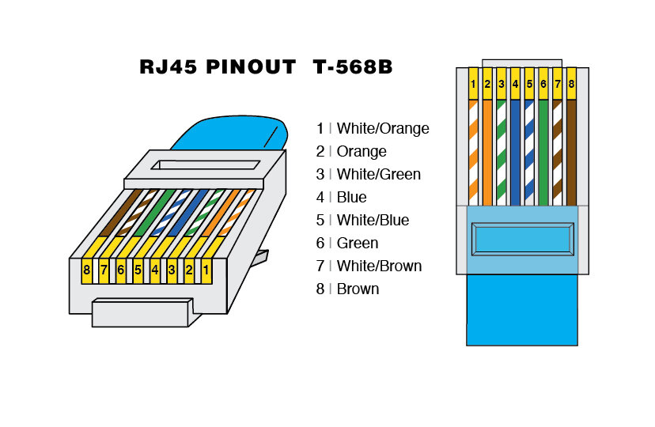
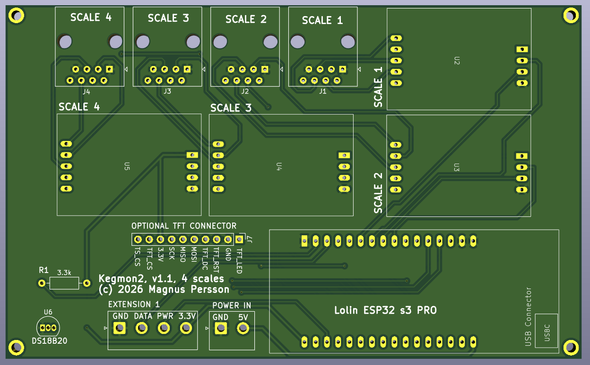

Building a device¶
Step 1 - Build the scale bases¶
First you need to build the scale base. You will need the following parts per scale:
DS18B20 temperature sensor
Network cable 3-4m (one cable can be split to support 2 scales)
Load cells (4 x 50kg)
Scale base PCB
3D Printed scale base
PCB for scale bases to make it easier connect all the cables. The PCB also has room for a RJ45 connector but in the current design of the scale bases its not used since it would make the scale base thicker.
{kind=link}

Step 1.1 - Printing the scale base¶
The 3D models for the scale bases are hosted in the 3d-designs repository. You can view them interactively below.
Scale base
Scale base cover
Step 1.2 - Mount the load cells¶
Start with mounting in the loadcells in the printed base and make sure the cables are ready for soldering on the scale base PCB.
Step 1.3 - Wire the load cells and temperature sensor¶
Mount and solder the temperature sensor on the scale base PCB as indicated by the silkscreen. Only DS18B20 sensors with 3 wires are supported since all the temperature sensors share the same onewire bus.
{kind=link}

Mark the load cells acording to this schematic and solder the cables in the position indicated on the PCB, one row per load cell. If the cabels are to long make sure you cut them to the same length. Use UL (Upper Left), UR (Upper Right), LL (Lower Left) and LR (Lower Right) to identify the cables. They should then be soldered to the PCB as shown on the silkscreen
Step 1.4 - Solder the network cable¶
In order for the scale bases to be as thin as possible i dont use the RJ45 connector on the scale, instead solder the cables directly to the PCB using the following color scheme. Pin 1 is marked on the PCB.
{kind=link}

I usually put some tejp over the soldered connected to keep the cables in position when closing the scale base.
Step 1.4 - Validate scale base¶
Before closing the scale base its a good idea to validate that everything works, so connect it to the controller and calibrate it before continuing to the last step.
Step 1.5 - Glue the base cover¶
Note
Don’t glue the base togehter before you have validated that it works as intended.
Put some glue around on the scale base and push the cover in place, make sure its aligned. Use any adhesive that works with plastics.
Step 2 - Build the controller¶
First you need to build the hardware which consists of 1 to 4 scale bases, case with the displays, HX711 boards and the ESP32. You will need the following parts. If you only want 2 scales just add 2 HX711 boards and 2 scale bases. If the software does not find an ADC it will disable that scale.
ESP32 S3 PRO board (Lolin)
HX711 boards (Purple or Red)
TFT display (Lolin 2.4” recommended)
RJ45 connectors
3.3kOhm resistor for DS18B20
Controller PCB for ESP32 and display
3D Printed case for display and ESP32
SD card 2Gb+ (optional for logging)
PCB for 4 scales and display
{kind=link}

There are some pins marked EXTENSION and they are reserved for future use and not used in this version.
Step 2.1 - Solder the connectors¶
Note
The marked DS18B20 is an extension where you can add an extra temperature sensor if you dont want to add them to the scale bases. The areas marked EXTENSION is not yet in use and is for future use.
TBD
Step 2.2 - Solder pins on HX711 boards and ESP32¶
TBD
Step 2.3 - Mount the components¶
TODO
Step 2.4 - Connect the display¶
If you are using the Lolin 2.4” display and their cable the connection is simple. But if you are using another display then i recommend to buy the lolin cable and then cut / solder the other end to your display.
The following displays are currently supported:
ILI9341 based displays (240x320) - Lolin 2.4
Step 2.5 - 3D print the case¶
TODO
Step 3 - Flash the device¶
The first step is to flash the firmware, I recommend using my webflasher as the easy option. Detailed instructions can be found here Software Installation